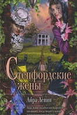

Название:Степфордские жены
Автор: Айра Левин
Описание: Айра Левин. Степфордские жены Сегодня борьба принимает иную форму; вместо желания сковать мужчину по рукам и ногам, женщина стремится скрыться от него; она уже не ищет способов затянуть его в имманентные миры, а желает показать ему себя, озаренной светом превосходства. То, как реагируют на это мужчины, порождает теперь новый конфликт: мужчина отпускает ее от себя, причем делает это с фальшивой учтивостью. Симона де Бовуар «Второй пол» Один Женщине, которая вручала подарки вновь
Название:Заблудший ангел
Автор:
Хавьер Сьерра
Описание: Хавьер Сьерра. Заблудший ангел Посвящается Еве, Мартину и Софии, моим ангелам‑хранителям… Тогда сыны Божии увидели дочерей человеческих, что они красивы, и брали их себе в жены, какую кто избрал. И сказал Господь: не вечно Духу Моему быть пренебрегаемым человеками, потому что они плоть; пусть будут дни их сто двадцать лет. Книга Бытия, 6:2‑3 Qui non intellegit, aut taceat, aut discat. (Кто не понимает, пусть либо молчит, либо учится.) Джон Ди (1527–1608) Двенадцатью часами ранее